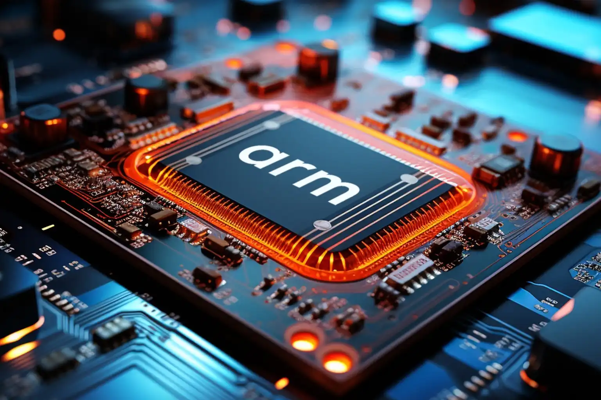

I'm an embedded system enthusiast.
I love making things move from my code. The idea of coding under
real-world constraints and getting output in the physical world
always fascinates me. Till now I've learned everything through
self-learning and I want to use my curiousity and execute my knowledge in real-world
projects and learn under guidance of experienced engineers.


What I build with
I develop STM32 applications using C/C++ and STM32CubeIDE, with Git for version control.
My foundation includes microcontrollers, digital electronics, operating systems, computer architecture, and DSA.
I am also exploring bare-metal programming, ARM assembly, linker scripts, startup code, and RTOS development.